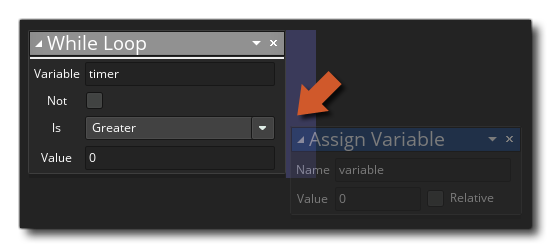

While While
While While
此While 动作将会一直循环，只有在给定条件为true才终止循环。例如，你可以将一个变量设置为false 然后运行while循环检测此变量。你可以在此循环中某处将此变量设为true。当再次检测该变量时，将终止循环。请注意,，无论你在 while 循环的何处设置条件，此次循环中的所有剩余动作将继续执行，然后才会执行while循环之后的动作或脚本。也就是说这种情况不会立即跳出循环。
当您将 while 动作添加到代码中时，您需要给出被检测的变量，要执行的检查类型 (小于、大于、等于等) 以及要检查变量的值 (您还可以标记not（反向），那么在将在检测结果不为真时结束循环）。然后你需要将动作添加到While循环中，就像将动作添加到"if"中时。例子：把动作块放在动作的一侧而不是下方。 
被添加到此While动作一侧的动作将被包含在此While动作中。当While动作全部执行完后，才会继续执行While之后的动作。（请看下面的例子）。如果你想在循环中任何时刻结束循环，你只需要调用 Break 动作。
参数 描述 变量 用于检查的变量 是 比较变量和给出值的条件（少于，多于，等于，少于等于，多于等于） 值 和变量比较的值
上述动作代码块将先创建一个临时局部变量并将它们设为 false。然后Whlie循环将会检查此变量，当此变量是false是将执行循环。在此循环中，我们将会随机获得两个临时变量，它们代表的是房间某处X和Y的坐标，然后在检查在这个坐标上是否有碰撞发生。如果没有碰撞，那么初始变量将被设置为 true来终止循环。当循环结束后，我们将在这个已经确认没有碰撞可发生的位置上，创建一个新实例。